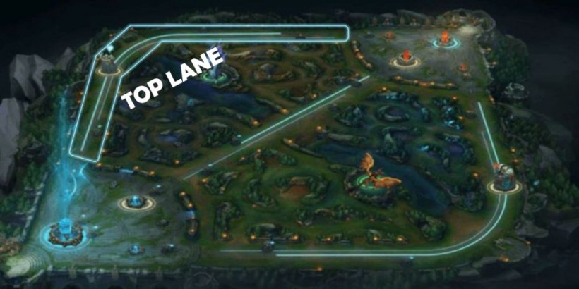
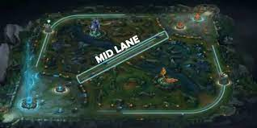
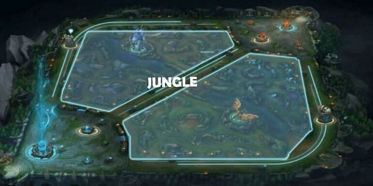

En el juego, dos equipos de cinco jugadores luchan en un combate jugador contra jugador, cada equipo ocupando y defendiendo su mitad del mapa. Cada uno de los diez jugadores controla un personaje, conocido como "campeón", con habilidades únicas y diferentes estilos de juego.
Minions
Los minions son una parte importante del juego, pues mediante eliminarlos, obtienes oro para seguir mejorando a tu campeón.
Torres
Las torres son uno de los objetivos del juego, debes derribarlas para poder acercarte a la victoria.
Inhibidores
Los inhibidores son los que se encuentran más cerca de la base del enemigo, de igual manera que las torres, hay que derribarlos para
acercarse más a la victoria y generar "super minions"
Nexo
El nexo es el centro de la base enemiga, es el que se debe derribar para obtener la victoria, está resguardado por 2 torretas y se encuentra enfrente
del punto de reaparición del enemigo.
En League of Legends existen más de 140 campeones, cada uno con habilidades y roles únicos. Es por eso que me gusta tanto, la variedad lo vuelve un juego en el que es imposible aburrirse, pues puedes siempre buscar otro campeón para dominar.
En el juego hay 5 roles:
Top
Es el que se encuentra en la línea superior del mapa, en esta línea usualmente se juegan campeones del tipo luchador o tanque. Se encarga de ser el que absorbe el daño del otro equipo.
Mid
Es el que se encuentra en la línea de en medio del mapa, en esta línea usualmente se juegan campeones del tipo mago, o asesinos. Se encarga de proporcionar mucho daño en poco tiempo.
ADC
Es el que se encuentra en la línea de abajo del mapa, en esta línea, a diferencia de otras, juegan 2 personas, una tiene el rol de ADC y la otra tiene el rol de soporte, en el caso del primer rol, usualmente se juegan campeones del tipo tirador. Se encarga de ser la principal fuente de daño del equipo.
Support
Es el que se encuentra en la línea de en abajo del mapa, en este rol se juegan campeones de tipo sanadores o de control de masas. Se encarga de dar apoyo al ADC y al resto del equipo.
Jungla
Es el área que se encuentra entre las demás líneas del mapa, en este rol se juegan usualmente campeones del tipo luchador, o tanques. Se encarga de apoyar al resto de líneas y controlar objetivos.
